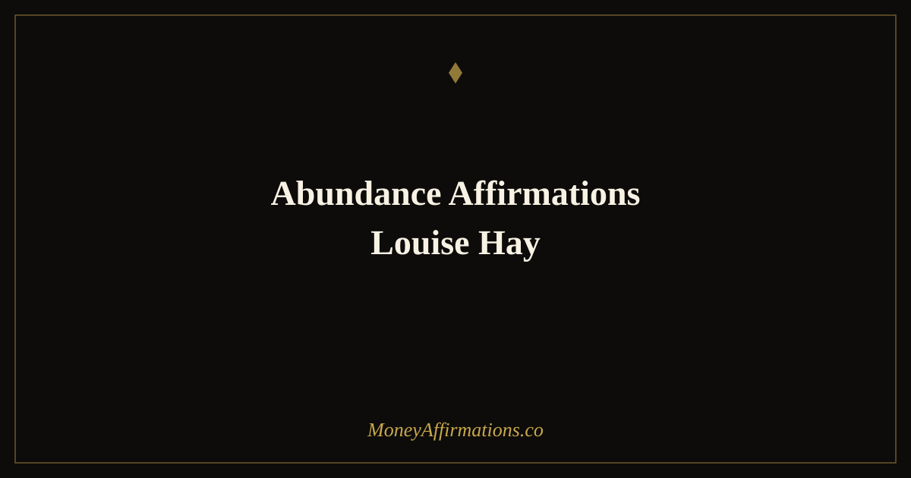

Abundance Affirmations Louise Hay: 30 Inspired Statements for Prosperity

Louise Hay spent decades teaching a simple but radical idea: the way you think about yourself determines everything else in your life, including your financial reality. She believed that money problems are rarely about money at all — they are about self-worth. When a person genuinely loves and approves of themselves, they naturally move toward abundance rather than away from it. They accept good things, ask for fair compensation, take financial risks with courage, and trust that life will support them.
The 30 affirmations below are written in the spirit of her teaching, with a specific focus on abundance and financial prosperity. They are not direct quotations from her work — they are original statements built on the same philosophical foundation: that self-love is the root from which all outer abundance grows, and that the universe is inherently generous to those who believe they deserve its generosity.
What are Louise Hay-inspired abundance affirmations?
Louise Hay-inspired abundance affirmations are first-person present-tense statements that connect financial prosperity directly to inner self-acceptance and worthiness. Where general money affirmations might focus on goals or behaviours, affirmations in Hay's tradition begin deeper — at the level of identity and self-regard. They work on the belief that a person cannot sustain outer abundance if they secretly believe they are undeserving of it.
These affirmations affirm that life is generous, that the universe actively supports your wellbeing, and that your loving relationship with yourself opens the channel through which material good flows. They sit naturally alongside our full abundance affirmations collection, which covers the wider landscape of attracting and receiving prosperity.
30 Louise Hay-inspired abundance affirmations for prosperity
- I love and approve of myself, and this love opens every door to abundance in my life.
- I am worthy of financial prosperity, and I accept it fully and gratefully.
- Life supports me in every way, including financially, and I trust that support completely.
- The universe is generous, and I am one of the people it delights in providing for.
- I release every old belief that tells me I am not enough to deserve a life of plenty.
- My relationship with money is warm, open, and built on genuine self-respect.
- I deserve to be paid well for the value I bring, and I receive that payment with ease.
- Every loving thought I hold about myself increases my capacity to receive abundance.
- I no longer punish myself financially through guilt, shame, or self-sabotage.
- I am at peace with prosperity, and prosperity is at peace with me.
- The more I love myself, the more opportunities to thrive appear in my world.
- I come from a place of wholeness, and wholeness attracts wealth naturally.
- I look in the mirror and see a person who is fully deserving of financial freedom.
- My past does not determine my prosperity — only my present beliefs do.
- I choose loving, abundant thoughts about money each time old fear arises.
- Life brings me beautiful financial surprises because I expect it to be kind.
- I am open to receiving money from many expected and unexpected sources.
- I treat myself with the same financial generosity I extend to those I love.
- I release inherited beliefs about scarcity and replace them with inherited beliefs about plenty.
- My inner world is rich and loving, so my outer world reflects richness back to me.
- I am safe to be prosperous — wealth does not change who I am at my core.
- I speak kindly about money, about myself, and about my financial future.
- The universe has more than enough for me and for everyone I love.
- I dissolve every block between me and abundance by choosing a loving thought right now.
- I am grateful for the financial good that is already in my life, and more is always coming.
- I move through the world knowing that I am provided for in all the ways that matter.
- My self-worth and my net worth both grow as I practise loving myself daily.
- I trust that my financial needs are always met, even before I can see how.
- Abundance is my natural state, and I return to it whenever I choose love over fear.
- I am a person who receives good things, and I allow financial abundance to be one of them.
How to use these affirmations
Louise Hay's signature practice — mirror work — is particularly well-suited to these affirmations. Stand in front of a mirror, make relaxed eye contact with yourself, and speak each statement aloud in a gentle, unhurried tone. The mirror creates a direct feedback loop between the words and your sense of self, which is exactly where this work is meant to land.
If mirror work feels uncomfortable at first, that discomfort is worth noting. It often reveals the very beliefs the affirmations are designed to address. Rather than pushing through quickly, slow down when resistance arises. Acknowledge the feeling, then choose the affirmation again — not as an argument against the feeling, but as a gentle counter-offer.
Morning practice is most effective, ideally before you check your phone or engage with the financial demands of the day. Five minutes of focused, felt affirmations in the morning creates a thread of self-regard that you carry throughout the day's decisions. You can also return to a single affirmation that resonates during moments of financial stress, using it as a brief but powerful reset.
Why self-love is the foundation of financial abundance
Louise Hay's central insight was that self-worth and financial worth are not separate systems — they are the same system expressed in different domains. This is not mystical thinking. It has a measurable psychological basis. Research into self-efficacy, conducted extensively by psychologist Albert Bandura, shows that the belief in one's own capacity and deservingness directly predicts goal-setting behaviour, persistence under difficulty, and willingness to pursue opportunities. People who believe they deserve good outcomes seek them out more actively and sustain that pursuit longer.
On the negative side, low self-worth creates a cluster of self-defeating financial behaviours: undercharging for work, accepting poor financial treatment from employers or clients, avoiding investment out of a sense of unworthiness, and unconsciously spending to soothe emotional pain rather than building security. These behaviours feel like money problems, but they are rooted in self-perception.
Hay argued that affirmations work not by magically summoning money but by changing the lens through which a person sees and responds to their financial world. When you genuinely believe that life supports you, you notice supportive circumstances more readily. When you believe you deserve prosperity, you take the actions that make prosperity more likely. The affirmation does not bypass effort — it changes the quality of attention and courage you bring to that effort.
Working with affirmations that specifically target self-love and worthiness is therefore not a detour from practical financial improvement. It is, in Hay's framework, the most direct route to it.
Tips to make these affirmations work faster
- Use mirror work daily. Speaking affirmations directly to yourself in a mirror accelerates emotional absorption. The visual feedback of your own face responding to the words makes the practice significantly more personal and effective than reading silently.
- Write them by hand. Handwriting engages a slower, more deliberate part of the mind than typing. Write two or three of these affirmations in a journal each morning before your day begins, feeling each word as you form it.
- Follow resistance with curiosity. When an affirmation triggers discomfort or scepticism, treat that as useful information. Write down what the resistant voice says, then write a compassionate response. This dialogue dissolves old beliefs more effectively than simply repeating the affirmation louder.
- Pair with gratitude. After your affirmation session, name three specific financial things you are already grateful for — however small. Gratitude and self-love reinforce each other and compound the effect of the practice.
- Return to one affirmation throughout the day. Choose one statement that feels most meaningful and use it as a quiet mental touchstone when financial anxiety or self-doubt arises during the day. Repetition across many small moments builds the new belief faster than a single morning session alone.
Frequently Asked Questions
What was Louise Hay's approach to abundance affirmations?
Louise Hay taught that outer abundance begins with inner self-acceptance. Her approach emphasised loving the self unconditionally first, then allowing that self-love to create the internal conditions for financial and material prosperity to flow naturally. She believed negative money beliefs were rooted in childhood programming and could be dissolved by consistently choosing loving, supportive thoughts toward oneself.
How does self-love create financial abundance?
Self-love creates financial abundance by changing the beliefs you hold about your worth and what you deserve. When you genuinely believe you are worthy of a good life, you make bolder financial decisions, accept opportunities more readily, charge fairly for your work, and resist situations that undervalue you. Research on self-efficacy supports this: people with high self-worth set more ambitious financial goals and persist longer in pursuing them.
What is the best way to use Louise Hay-inspired abundance affirmations?
The most effective method, consistent with Louise Hay's own teaching, is mirror work — standing in front of a mirror, making eye contact with yourself, and speaking the affirmations aloud with warmth. Do this each morning for five to ten minutes. The mirror amplifies emotional resonance, making the statements feel more personal and real. Pair this with a brief journaling session where you note any resistance that arises, then respond to that resistance with a gentle, loving counter-statement.
If these affirmations resonate, the full abundance affirmations collection offers 80 additional statements organised by theme — covering receiving, gratitude, financial flow, and the expansive belief that there is always more than enough for you.